01
Saturday · July 25
Barely on Board
A rushed departure, one urgent airplane bathroom, a missing backpack, and a welcome swim.
Saturday July 25th was mostly a travel day. Although I felt like we had plenty of time, we ended up getting to the airport just in time to board the plane. It was a good reminder that if we want to spend time in the lounge before a flight, we probably need to leave about three hours before departure rather than two.
The flight itself was mostly uneventful. Doug needed to use the bathroom as we were taxiing, but managed to hold on. As soon as we reached cruising altitude, before the seatbelt sign had even gone off, I took him back. We were the first ones to use the airplane bathroom, which seemed to help keep the rest of the flight peaceful.
Chris met us at the airport and drove us home. It wasn't until we arrived that Birch realized his backpack was missing, which understandably caused a lot of frustration. That evening we went swimming, and by the end of the night Birch had mostly come to terms with it, figuring we would call the airline in the morning.
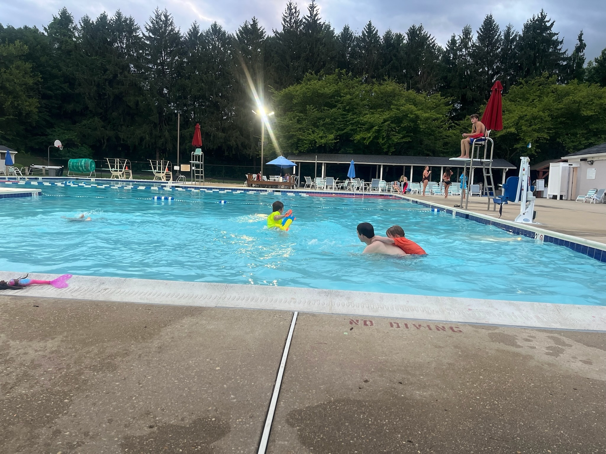
02
Sunday · July 26
Family in Hagerstown
Good news from the airport, a house full of cousins, Risk, the park, and vegetarian chili.
The next morning, after sleeping about as well as you can after flying east, we called the airport and learned that the backpack had been found. We made a plan to pick it up later.
Sunday we drove to Hagerstown to visit my cousin Emily, her husband, and their seven children. She made a nice lunch, and it was great spending time with everyone. The older kids settled into a game of Risk while the younger ones played with toys. Their house sits across from a beautiful park, so we spent some time there as well. It was a really enjoyable visit and a chance to reconnect with Emily and her family.
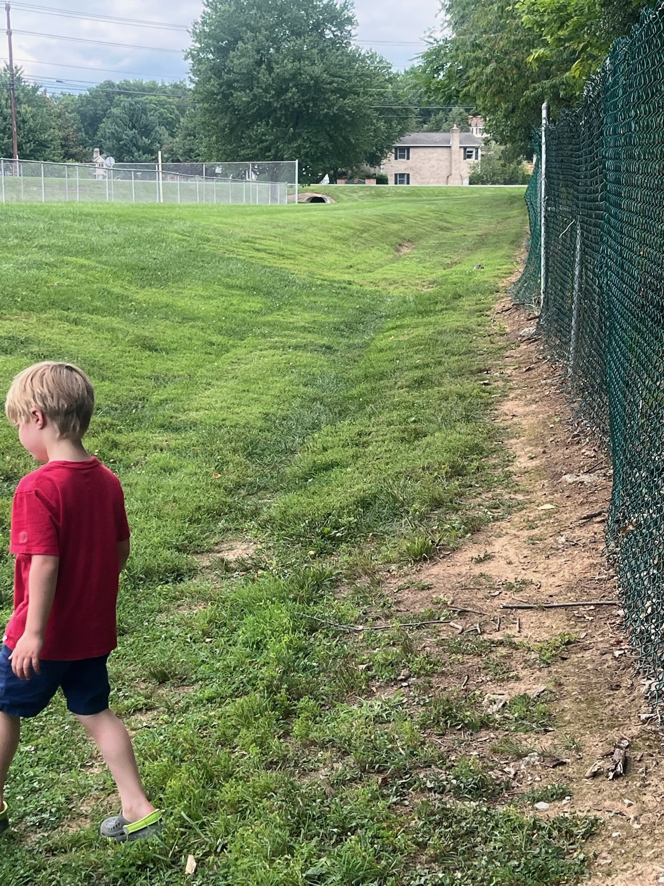
That evening we came back to Chris and Mary's house. We didn't make it to the pool, but we once again enjoyed their vegetarian chili.
03
Monday · July 27
Mount Vernon
George Washington’s mansion, a working estate, neighborhood swimming, and Mary’s collections.
Monday, we woke up a little earlier than the previous mornings, around 7:35 or 8:00. Breakfast was simple. Fruit, peanut butter, and toast. Then Chris drove us to Mount Vernon, where we toured George Washington's mansion and spent time walking the grounds and visiting the exhibits. Doug and Birch liked the animals. I thought it was interesting that the services, including the kitchen, laundry, bathrooms, and cloth making, were all exterior and housed in separate buildings from the main mansion.
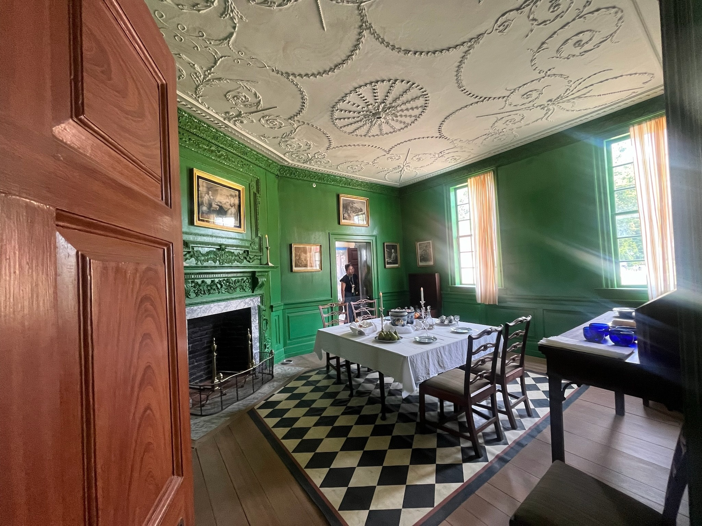
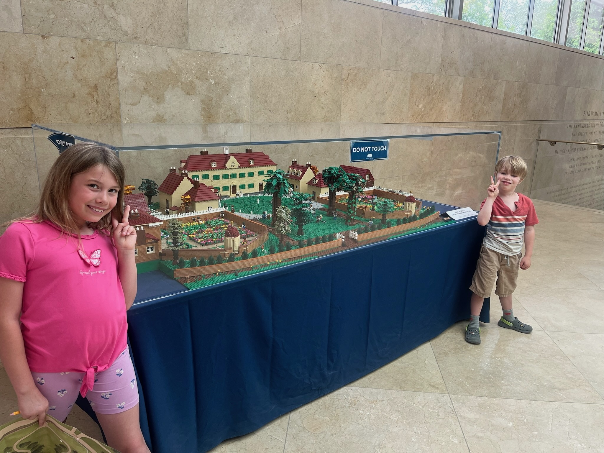
We came home and immediately went swimming for an hour while Chris made dinner, pasta with tomato sauce and garlic bread. One unexpected highlight has been watching the kids discover many of Mary's collectibles, especially her doll collection, which they've enjoyed playing with. Between that, the spacious backyard, and the neighborhood pool, we've had plenty to do. It was an excellent start to the trip.
04
Tuesday · July 28
Into Washington
A wooded detour, one excellent hotel view, Thai food, and a rainstorm worthy of its own paragraph.
I woke up Tuesday with a bit of a sore neck, but otherwise everyone was doing well.
Tuesday ended up being more of a transition day than anything else. We spent much of the morning doing laundry. While waiting for it to finish, we decided to go for a walk through the woods near Chris and Mary's house. I get the impression they don't spend much time back there, but exploring woods is one of our family's favorite activities, so we couldn't resist.
It turned into a great little adventure. We got a bit lost and spotted a couple of deer, a lot of bear poop, frogs, fish, and many other amazing creatures. We wandered longer than we had planned. One thing that struck me was something that seems to happen over and over with Maple. During the walk she repeatedly insisted she couldn't go any farther, complained about how tired she was, and protested the whole way. Yet once we got home, she happily declared that it had been a great adventure and that she was glad we had gone.
Parenting often seems to involve that contradiction. Sometimes your kids resist the very experiences they end up enjoying the most. Knowing when to encourage them to keep going isn't always easy, but it often seems worth it in the end.
The neighborhood Chris and Mary live in is beautiful. Flower Valley has that classic suburban feel, with well-kept homes from around the 1960s and plenty of mature trees. The downside is that everything is spread out. Even a simple walk ends up taking quite a while, especially in the summer heat. By the end I was carrying Douglas for stretches of the walk, and everyone was happy to make it home.
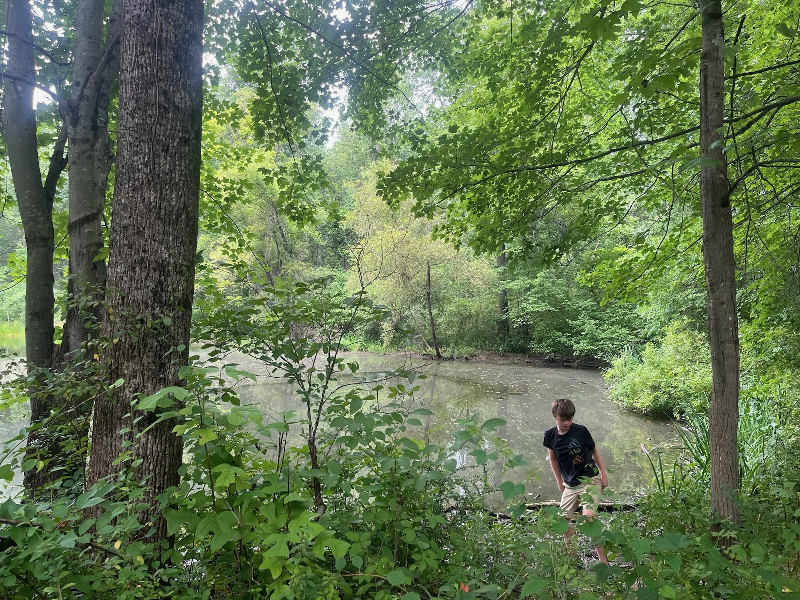
Later that afternoon Chris drove us into Washington, D.C. We checked into the JW Marriott, although getting the room sorted out took a little while. The first room definitely wasn't the monument-view room I had booked. The second technically had a view, but only the very top of the Washington Monument was visible from the second floor, and it felt a bit too close to the street. Fortunately the hotel was accommodating and moved us again, this time to the eighth floor. The view there was excellent, with a clear look at the Washington Monument.
After getting settled, we walked to a nearby Thai restaurant for dinner. Maple had been talking about wanting Thai food, but when we arrived she ordered fried tofu with rice, which is about as close as you can get to ordering plain food at a Thai restaurant. The meal was excellent nonetheless. I had pad eggplant and Stacey got drunken noodles, which were both very good, and we split summer rolls.
We walked back along the National Mall as evening settled in. Near the end of the walk a rainstorm rolled through, producing very different reactions from the kids. Maple hated every minute of getting wet, while Birch thought it was fantastic. It was not the rain we were used to in Seattle. It was really raining buckets, like can't-see-to-the-end-of-the-block rain. A torrential downpour. As with the hike earlier in the day, though, once we finally made it back to the hotel, Maple admitted that the whole experience had actually been pretty fun.
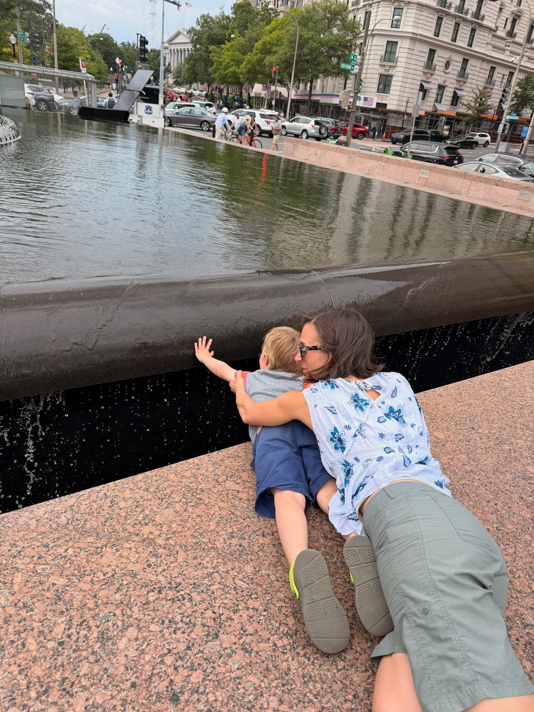
The only difficult part of the evening was bedtime. Fitting all of us comfortably into the hotel room proved more challenging than expected, and getting everyone settled took some effort.
05
Wednesday · July 29
First Museum Day
Donuts, the Air and Space Museum, the Sculpture Garden, Capitol Hill, and a tiny excellent cake.
Wednesday started slowly. I went out early for coffee from Panera using my new Sip Club membership. While I was gone, Stacey picked up donuts from Dunkin'. We eventually got everyone up, and breakfast ended up being a mix of donuts and overnight oats before we got ready for the day. There was a bit of unnecessary drama over a game of hide-and-seek in the hotel room before we finally made it out the door.
Our main destination was the National Air and Space Museum. We spent several hours exploring the exhibits. Birch's favorite was the Wright brothers exhibit, though I still need to ask everyone else what stood out to them. I especially enjoyed the exhibits showing how flight has connected the world and transformed everyday life. I also liked the optimistic view toward the future, even while acknowledging some of the challenges ahead. We also watched a presentation in the planetarium about future space exploration and the kinds of technologies humanity may need if we ever hope to reach Earth-like worlds beyond our own.
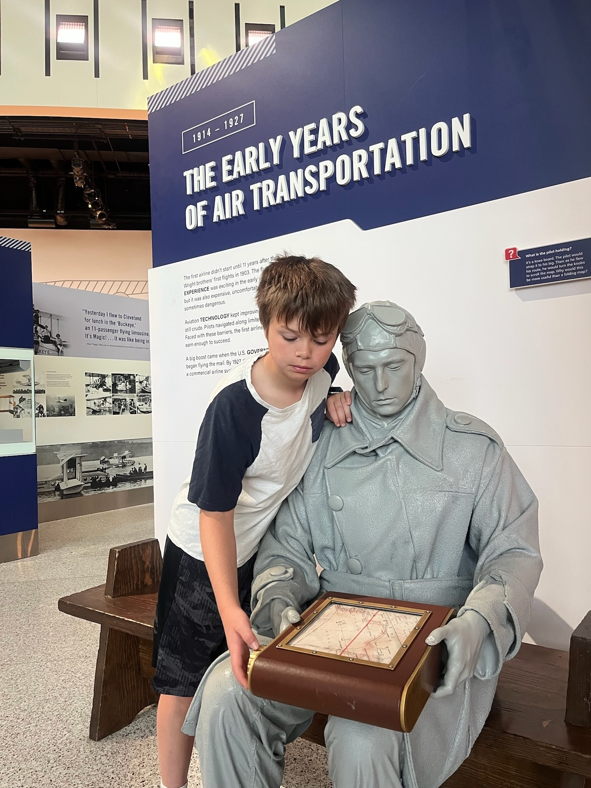
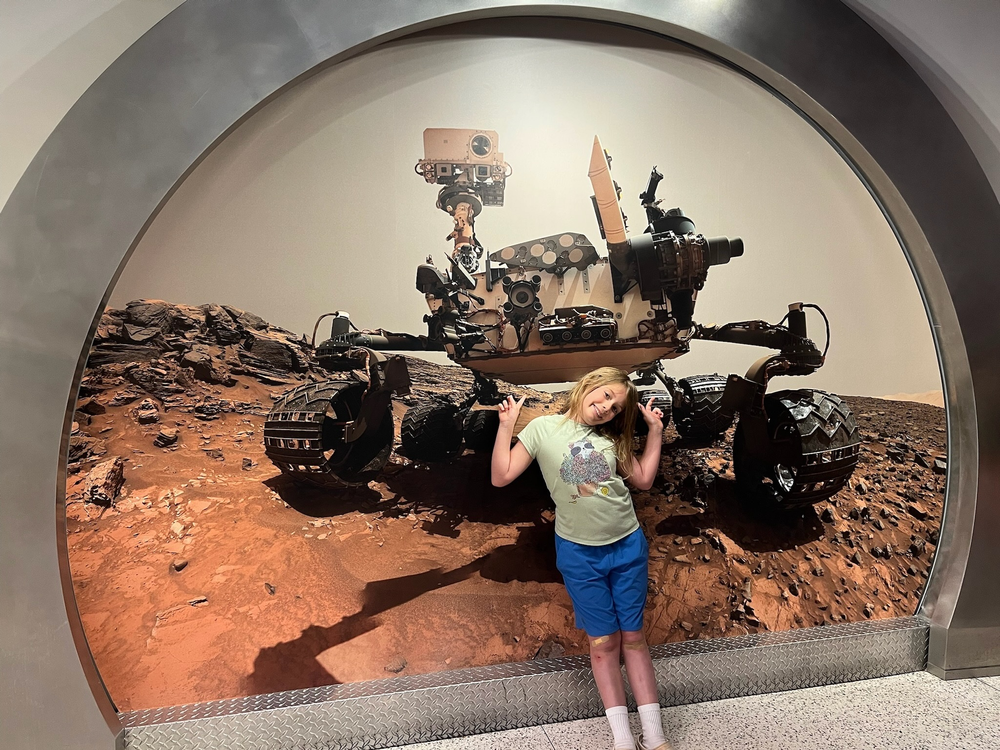
From there we wandered through the National Gallery Sculpture Garden, enjoying the fountains and sculptures before continuing on.
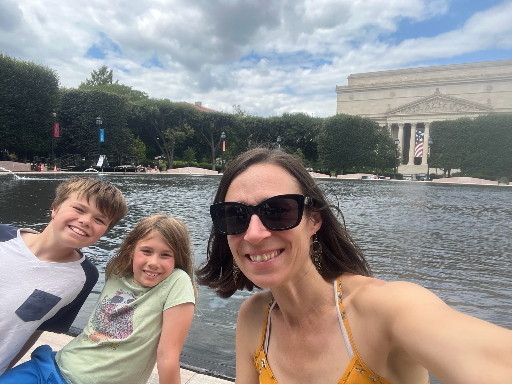
Before heading back to the hotel, Douglas, Birch, and I made a quick visit to the National Museum of African American History and Culture. We only had time for a brief visit, but I was glad we stopped in. It is a museum I'd like to spend more time exploring on another trip.
Later that afternoon, Stacey and I took the Metro to Capitol Hill to visit Trader Joe's and stock up on food and snacks for the rest of the trip. Walking around the neighborhood was almost as enjoyable as the shopping. The tree-lined streets and historic row houses made it one of my favorite neighborhoods we saw in Washington.
Back at the hotel we treated ourselves to room service dessert, a small chocolate mousse cake that was excellent. Tiny, but excellent.
Bedtime went much more smoothly than the night before. We put Doug's bed on the floor, which gave everyone a little more room and made it much easier for all of us to get to sleep. We were all in bed around 10:00.
06
Thursday · July 30
Origins and Originals
The conference begins; the family crosses from human origins and gems to the nation’s founding documents.
Thursday morning I was up before seven for the continuing medical education conference. The hotel breakfast was what you'd expect. Potatoes, pastries, fruit, coffee, and the usual assortment of breakfast foods. The coffee was decent, and the lectures were solid. The morning covered ADHD, depression, bipolar disorder, cancer screening, and approaches to evaluating patients with possible cancer. Bipolar disorder isn't something I manage very often, so that session was somewhat less relevant for me, but overall it was a worthwhile morning. I'd probably rate the first day as good rather than exceptional, though I was looking forward to the rest of the conference.
By lunchtime I was back in the hotel room, finishing off some surprisingly good french fries the family had saved for me.
Thursday afternoon, after finishing the conference, I met Stacy and the kids near Woodrow Wilson Plaza. From there we headed toward what we thought was the National Museum of Natural History. We accidentally wandered into the National Museum of American History first before realizing our mistake and heading next door.
Our first stop inside the Natural History Museum was Maple's choice, the Hall of Human Origins. Since it was on the same floor where we entered, it made an easy starting point. It turned out to be an excellent exhibit, and I think everyone enjoyed learning about human evolution and our ancient ancestors.
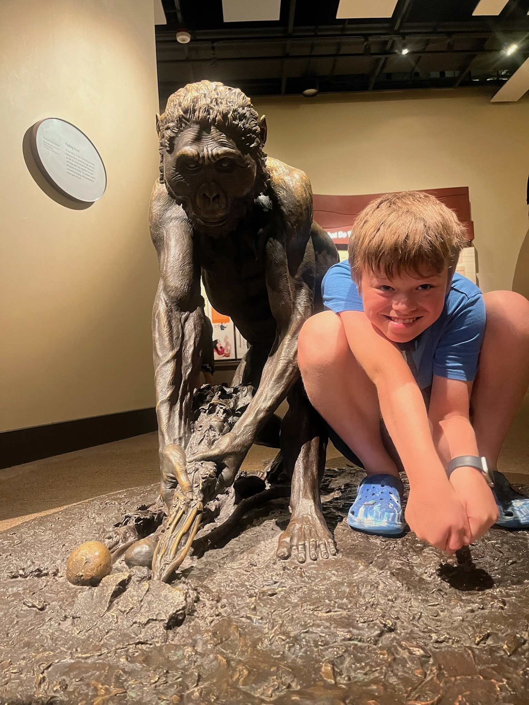
Next was Douglas's choice, the geology and gem exhibits. Those galleries were enormous and probably one of the highlights of the museum. There was something fascinating around every corner, and all of us enjoyed wandering through the displays of minerals, gems, and enormous rock specimens.
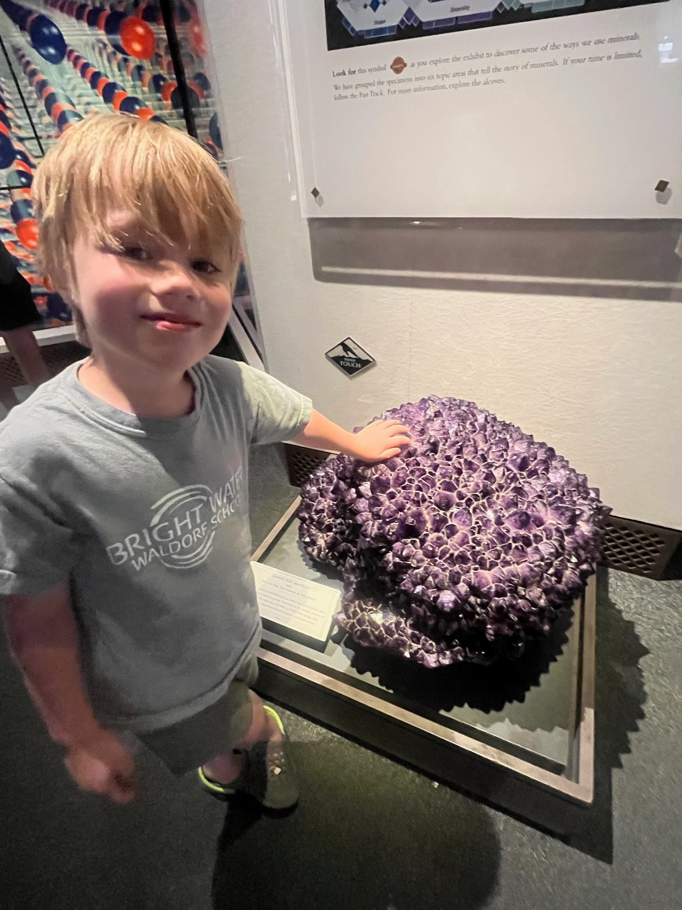
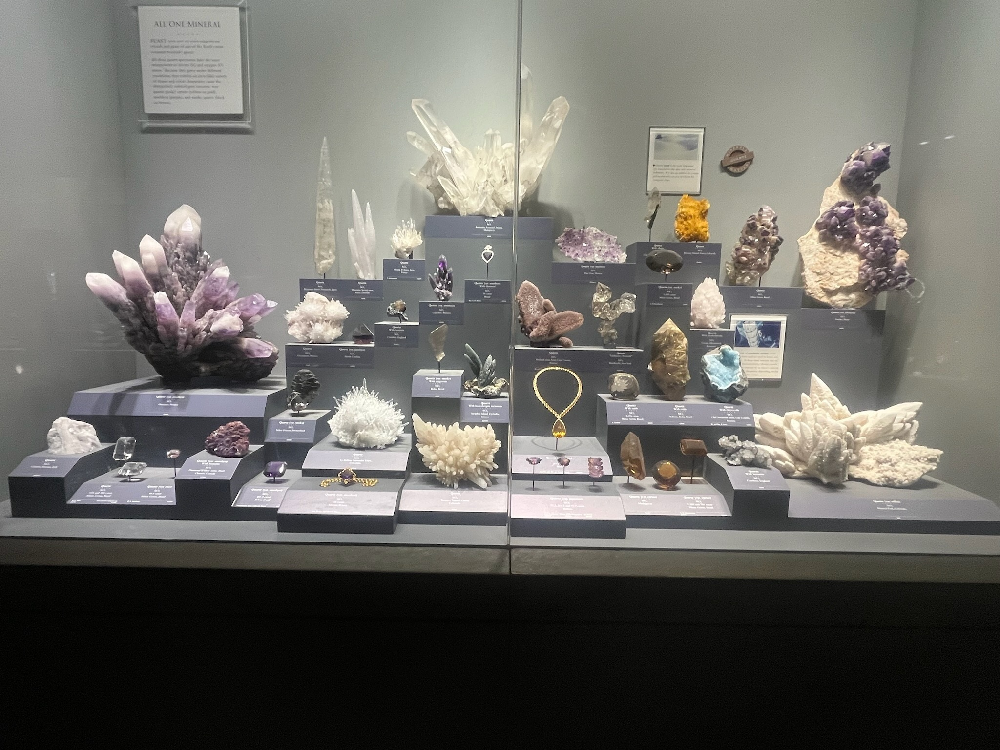
Birch had hoped to visit the insect exhibit, but unfortunately it was closed. Instead, we explored the exhibits on North American wildlife and landscapes, including the bison display and the "This Land" exhibition. I really enjoyed seeing the diversity of landscapes and ecosystems across the United States. It was another reminder of just how varied the country is.
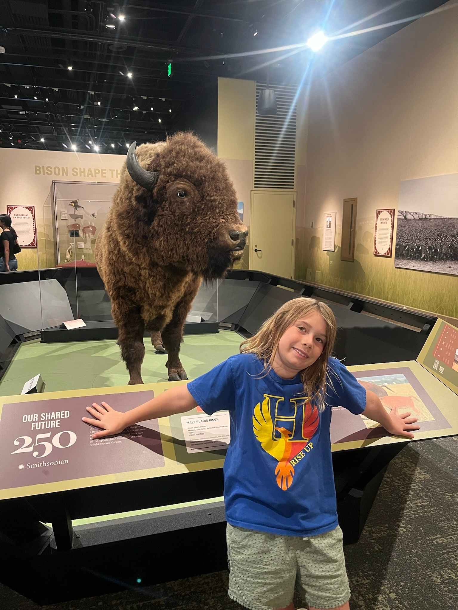
We left the museum around 4:30. At first we debated whether everyone had enough energy for another museum. The kids were leaning toward calling it a day, but Stacey suggested we stop at the National Archives since it was right there. It turned out to be a great decision. There was almost no line that late in the afternoon, and we were able to see the Declaration of Independence, the Constitution, and the Emancipation Proclamation. Seeing those original documents in person was surprisingly moving, especially after spending the previous few days visiting Mount Vernon and learning more about the country's founding.
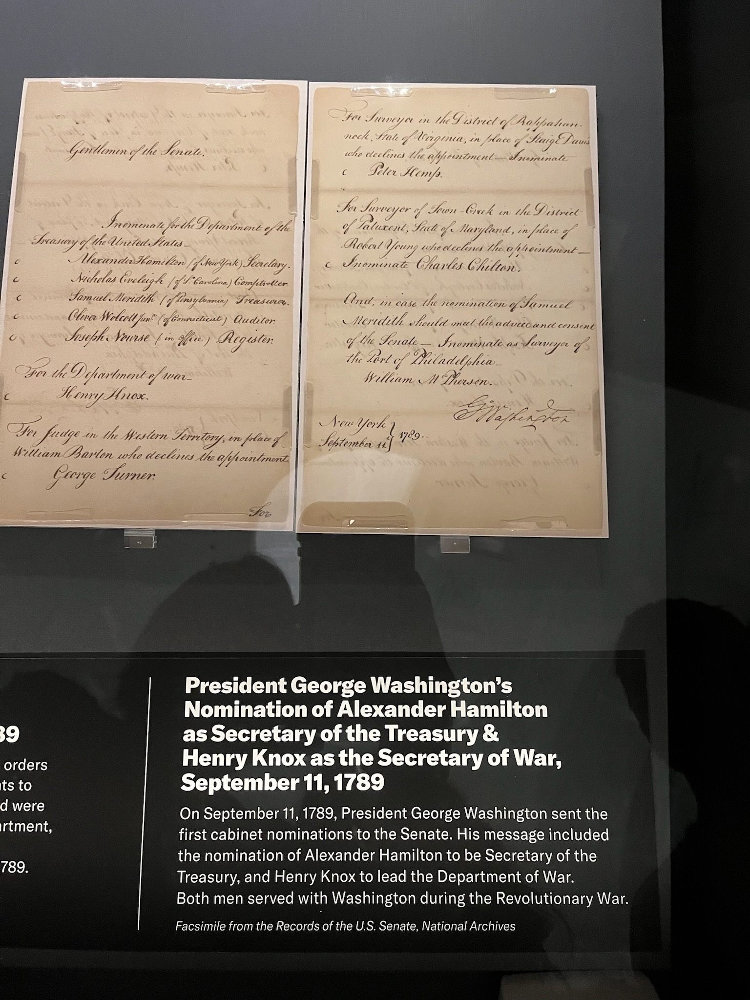
On the walk back to the hotel we picked up salad greens and a small cheese pizza for dinner.
Later that evening John's family arrived. John, Stacey's brother, came with his son Luke and Autumn. We met them just outside our hotel. The kids had a great time running around Freedom Plaza before we walked over to the White House, viewing it from Lafayette Square. It was a pleasant evening walk and a nice way to end the day before returning to the hotel for baths, reading, and bed.
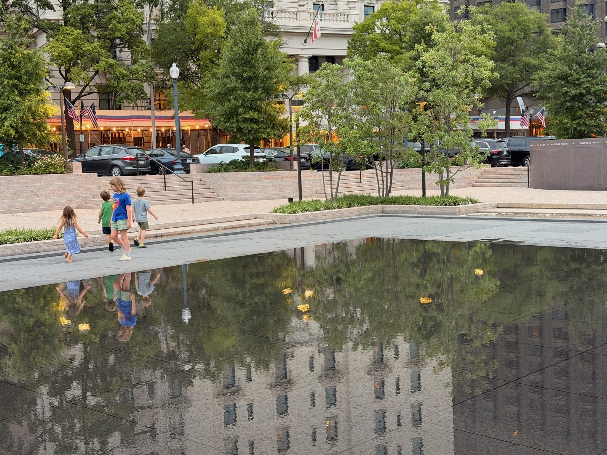
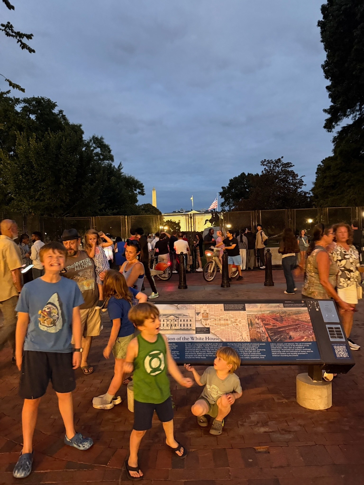
07
Friday · July 31
Two Washingtons
A zoo day for the family, a monument-and-museum afternoon for me, and dinner together at The Hamilton.
Friday morning I was up early once again and slipped out before everyone else was awake. The family headed to the National Zoo with John and his kids while I attended another day of the continuing medical education conference. I thought the sessions were a bit stronger than the previous day.
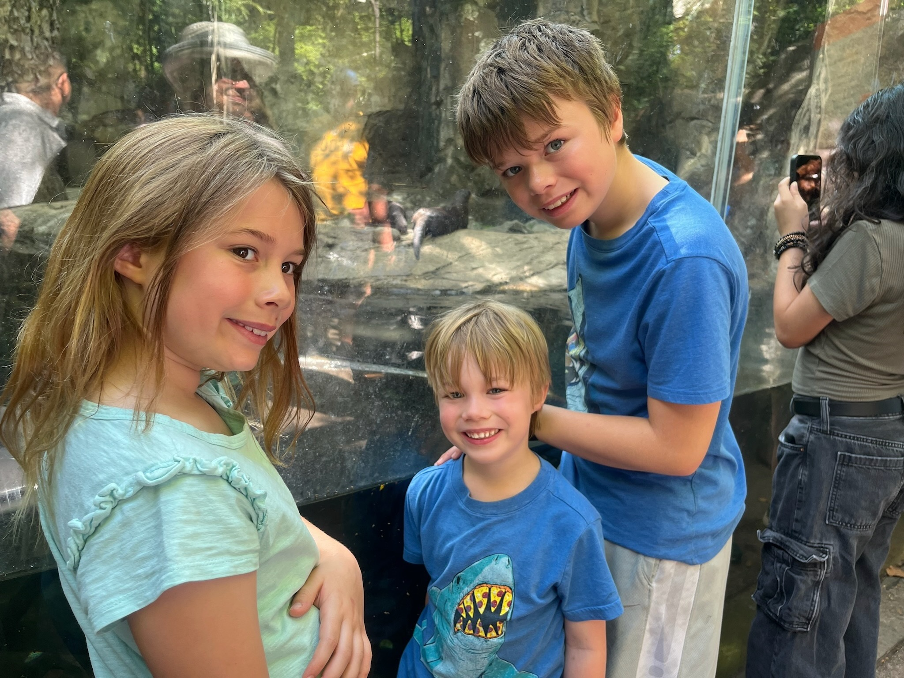
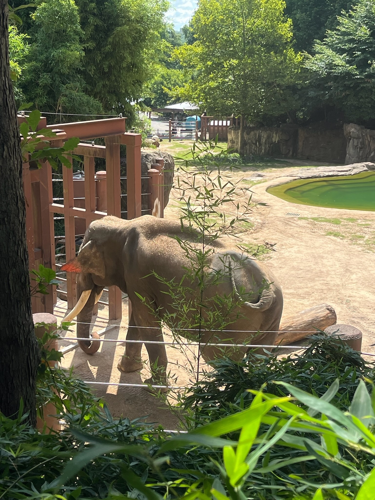
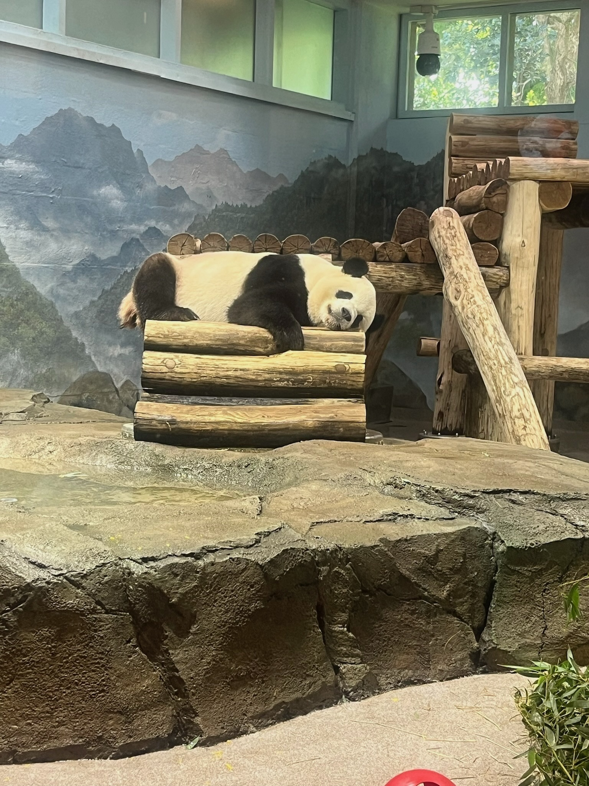
After the conference I returned to the hotel and spent some time catching up on work that I'd been meaning to do. With the room quiet and everyone else out exploring, it was a good opportunity to make some progress.
That afternoon I had a 3:00 tour of the Washington Monument. I had managed to reserve a ticket the day before, so while the rest of the family was still out, I took advantage of the chance to see one more landmark on my own.
After finishing my visit to the Washington Monument, I spent some time exploring. I stopped by the Hirshhorn Museum and then visited the original Smithsonian building, often called the Castle, where I enjoyed seeing some of the historical artifacts on display. I also made it to the National Gallery of Art, but almost as soon as I walked in, Maple called to say the family was heading back to the hotel. I decided to do the same.
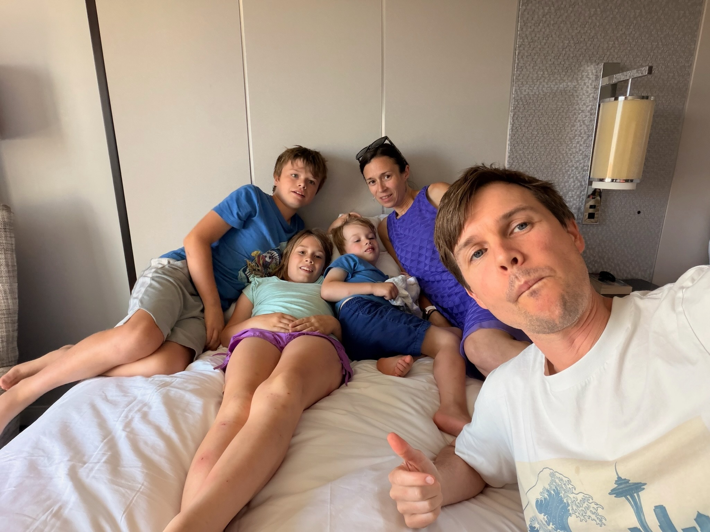
Back at the hotel there was a little bit of excitement. Stacey's mom had been delayed getting into the city, and we had a 6:00 p.m. dinner reservation at The Hamilton, just a block from the hotel. I took our three kids over ahead of time, but the host explained that they couldn't seat our reservation until at least six people had arrived. Fortunately John showed up about five minutes later, and Stacey and her mom arrived another five minutes after that. Her delay turned out not to be a problem after all, and we were able to enjoy dinner together.
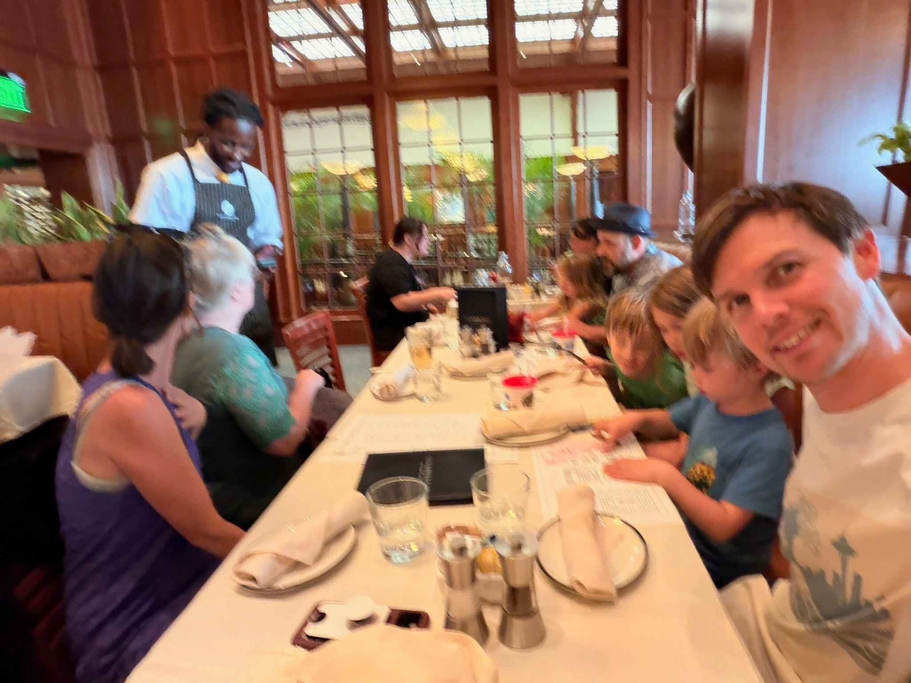
Afterward we returned to the hotel, relaxed for a little while, and turned in for the night. Douglas woke up during the night, but everyone eventually managed to get back to sleep.
08
Saturday · August 1
The Potomac and the Mall
A difficult morning gives way to boats, fountains, the Lincoln Memorial, Magic, and one last night walk.
Saturday morning I found myself sleeping in a little later than the previous days. I got up around 7:15 and made it downstairs just as the conference lectures were beginning. A little while later Stacey texted to let me know that both Birch and Douglas weren't feeling well. Soon after, Douglas threw up and asked for me, so I left the conference early and went back to the hotel. Douglas slept while I watched the remaining hour and a half of the conference remotely from the room.
Meanwhile, Stacey, her mom, Birch, Maple, John, Luke, and Autumn went to brunch at Pinstripes. They said the buffet was excellent, although Stacey's mom was delayed a bit because it took her a while to find parking.
Later that afternoon we all met up again at the Georgetown waterfront, where we boarded a sightseeing boat on the Potomac River. On the trip upriver there was a narrated tour pointing out many of the landmarks along the shoreline. On the return trip, the captain invited the kids up one by one to take a turn steering the boat. Everyone except Douglas, who still wasn't feeling well, had a chance to drive.
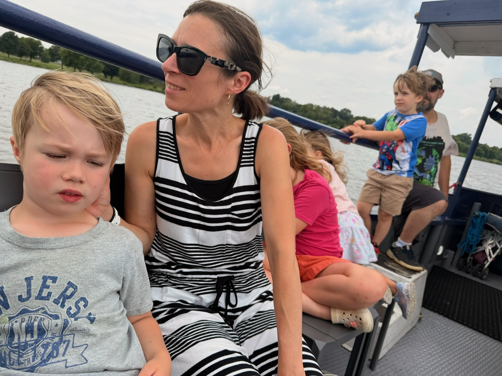
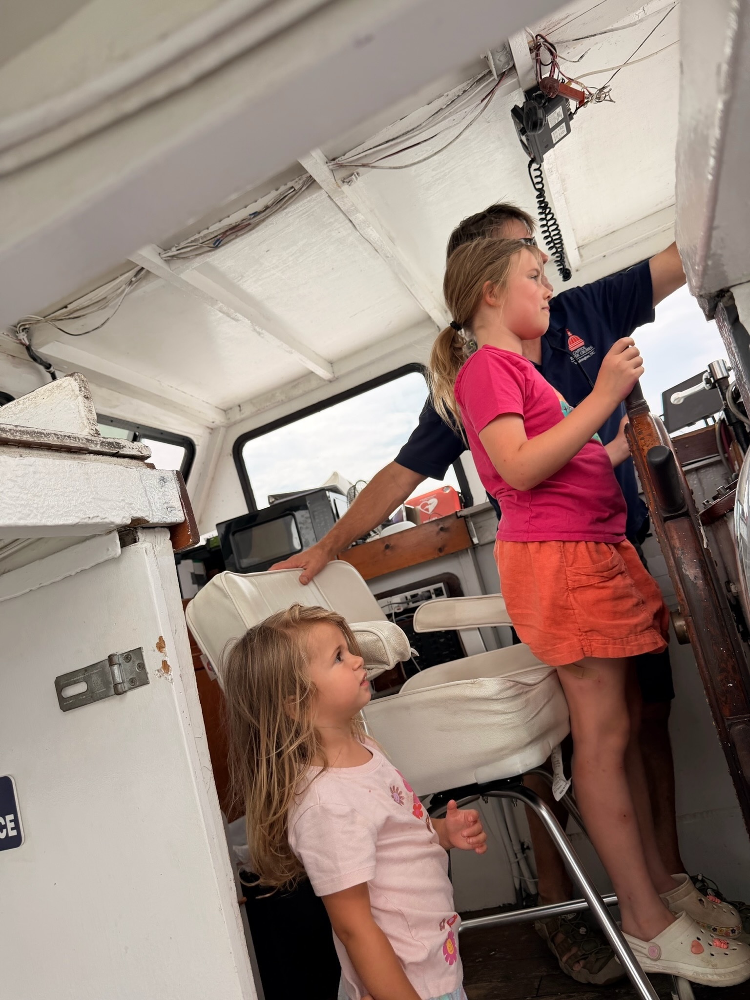
After getting off the boat, the kids spent quite a while playing in the waterfront splash park while Stacey walked her mom back to her car. After saying goodbye, Stacey's mom headed home.
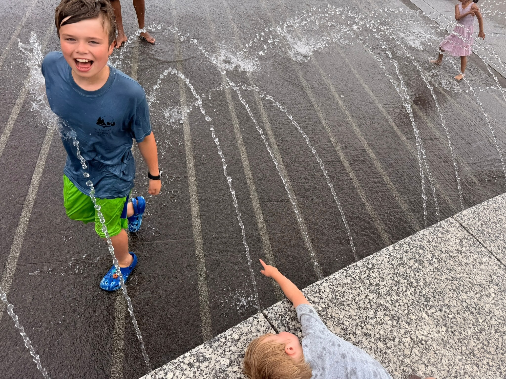
The rest of us started walking back along the Potomac. John eventually split off near the Kennedy Center so he could retrieve his car, while the rest of us continued despite some objections from Maple, who was tired of walking. We crossed several busy streets before reaching the Lincoln Memorial, and despite the long walk it was absolutely worth it. Seeing the memorial in person, especially after spending so much time learning about American history during the trip, felt like a fitting stop.
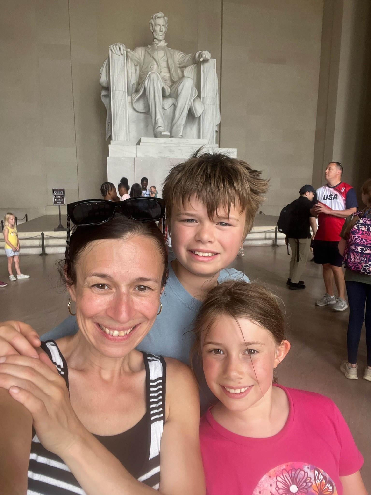
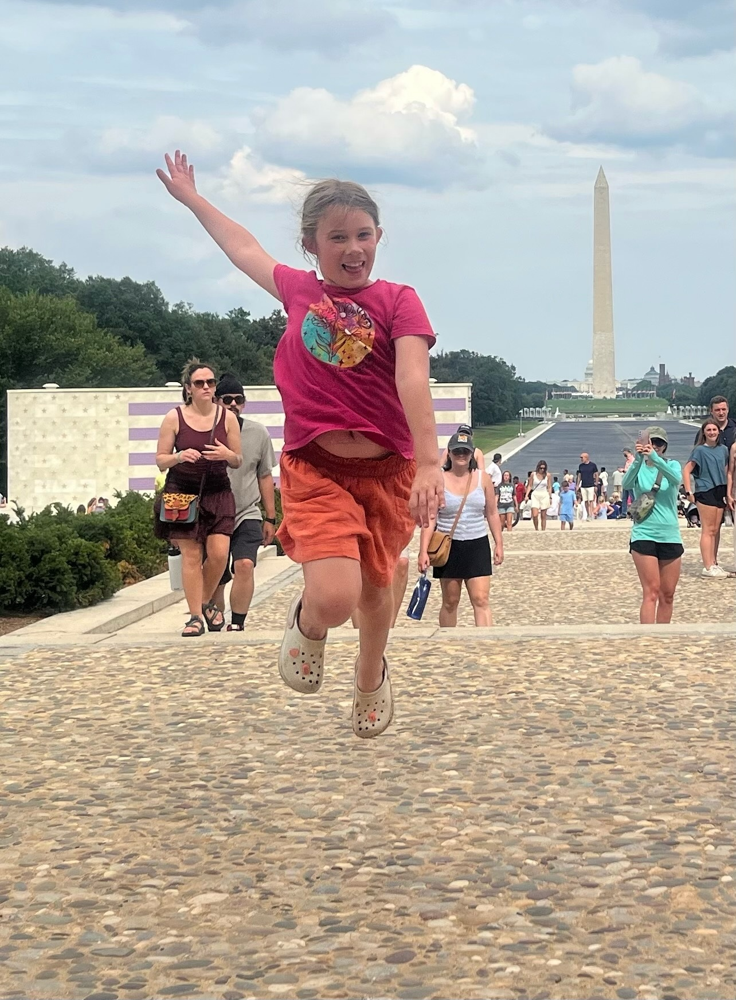
By the time we returned to the hotel everyone was exhausted. Dinner was intentionally simple. I picked up Panera for some of us, Vietnamese food for others, and treated myself to a Guinness. The kids relaxed with some television while Birch and I headed downstairs to play a few games of Magic: The Gathering.
As the evening wound down, Birch and I took one last walk together through the National Mall. Seeing the monuments illuminated at night was a peaceful way to finish our stay in Washington. Back at the hotel I took one last shower and settled in for our final night in D.C.
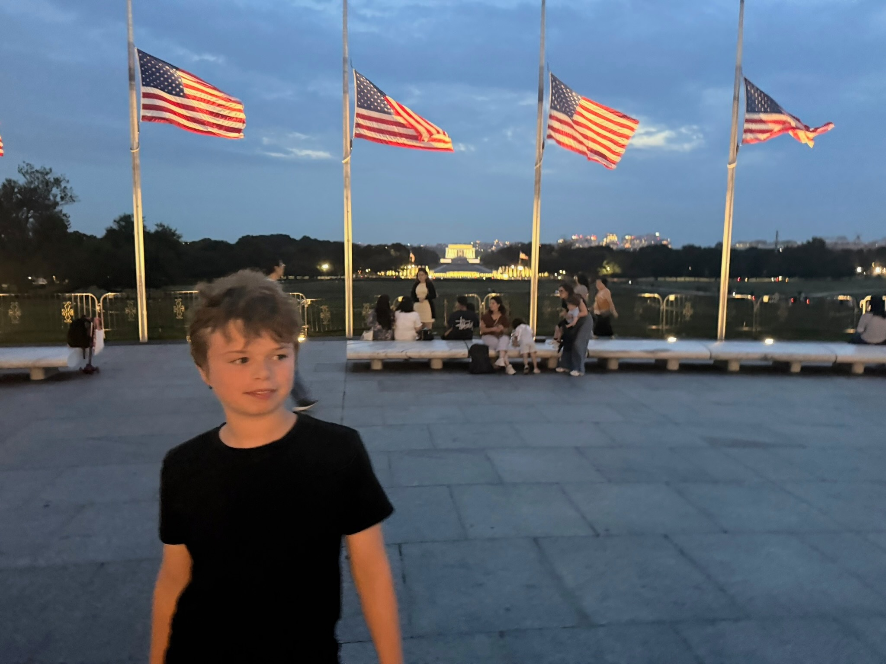
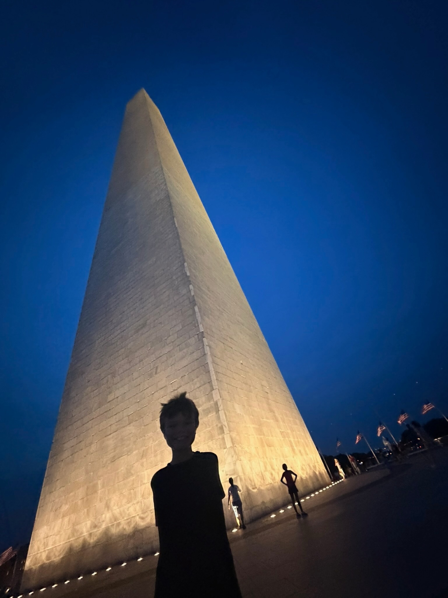
09
Sunday · August 2
One Last Museum
Fossils, a mummy, a hurried transfer to the airport, blueberry smoothies, and the journey home.
Sunday morning was my final day of the continuing medical education conference. The last two hours focused on neck and cervical spine disorders, which was a fitting way to wrap up the course.
After the conference we packed up the hotel room, checked our bags with the front desk, and met John briefly. We had talked about visiting another museum together, but by that point everyone, especially the kids, was feeling pretty worn out from several days of sightseeing, so John decided to head home.
The rest of us returned to the National Museum of Natural History for one last visit. We spent our remaining time exploring the fossil hall, seeing the mummy exhibit, and stopping by the exhibit on cell phones and modern technology. We also had lunch there before heading back to the hotel to collect our luggage.
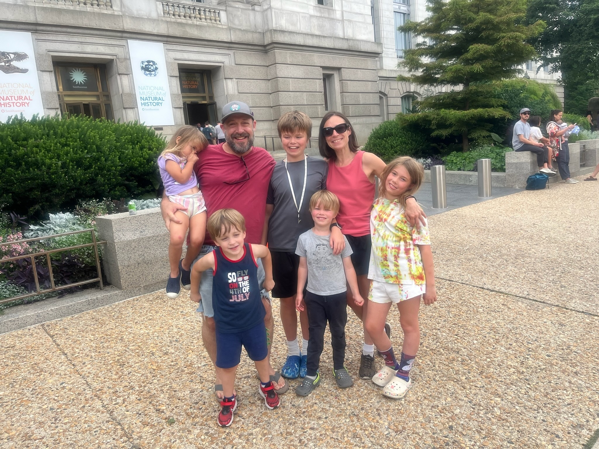
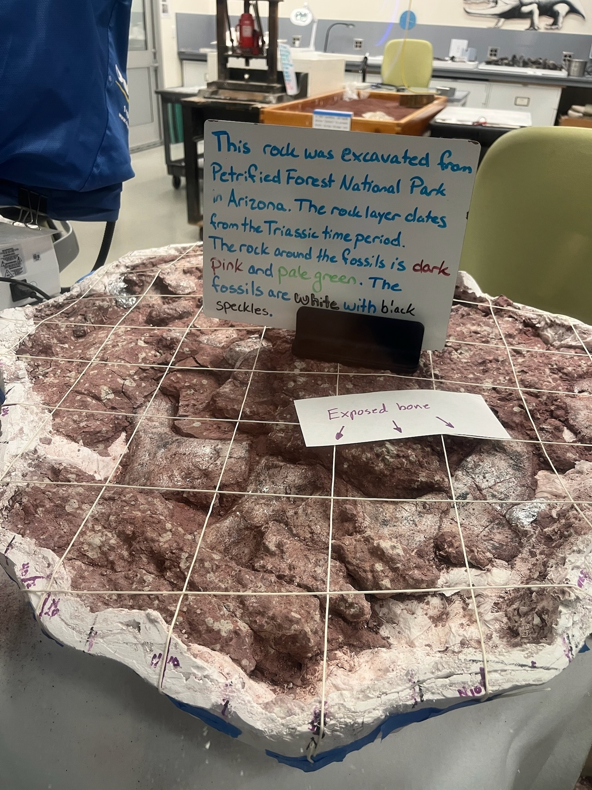
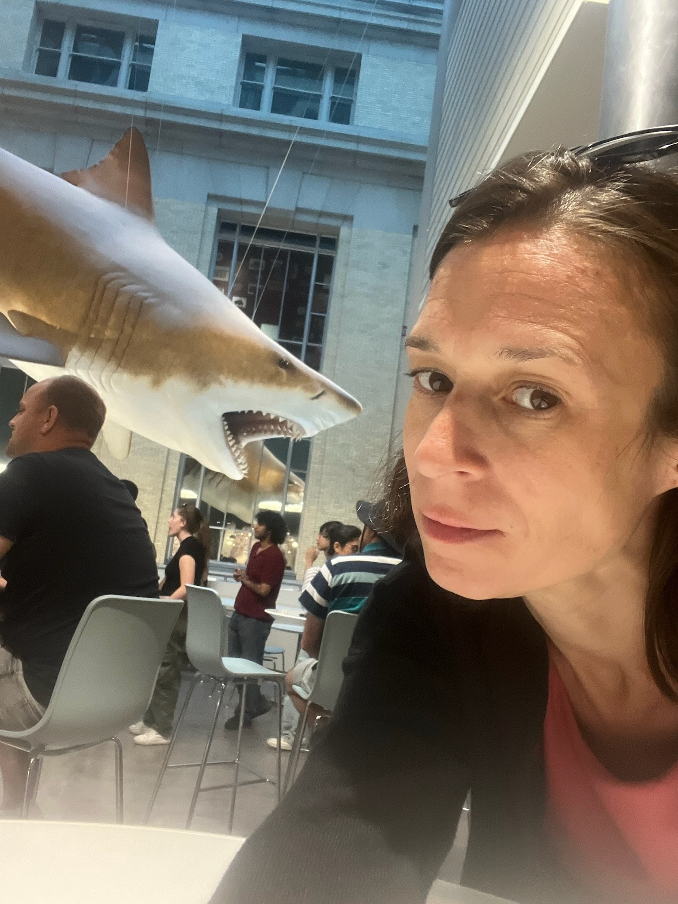
From there we took the Metro toward the airport. We rode the Orange Line to the end of the route before deciding that the train connection would take too long, so we called a Lyft instead. That nearly became an adventure of its own when I accidentally selected the wrong pickup location at the station. We ended up running across to the correct spot, arriving hot, sweaty, and just in time.
Once at the airport we checked our bags and thought about visiting the lounge, but the wait was too long to make it worthwhile. Instead we grabbed pretzels and smoothies. The smoothie shop was nearly out of fruit, and the only fruit they still had that I could eat was blueberries, but it still hit the spot.
Before long we were on the plane, beginning the journey home.
It was a really good trip. We packed an enormous amount into just a few days. We spent meaningful time with family, explored Washington, D.C.'s museums and monuments, visited Mount Vernon, walked neighborhoods we had never seen before, and enjoyed the simple moments of swimming, meals together, evening walks, and watching the kids discover new things. There were the usual travel frustrations, tired kids, a lost backpack that thankfully turned up, rainstorms, and a few illnesses near the end, but none of them overshadowed the experience. Looking back, it feels like time well spent.